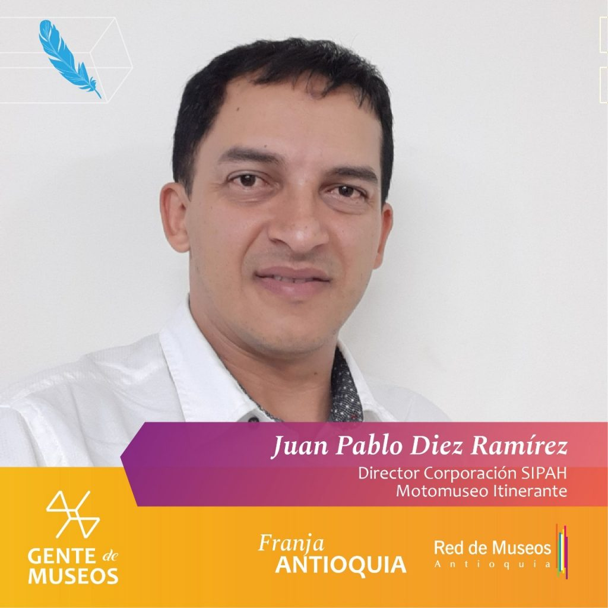

Director · Corporación SIPAH
Juan Pablo Díez Ramírez
Antropólogo y arqueólogo
Arqueólogo de SIPAH en el sitio de la sede de Telemedellín, en El Poblado (hallazgo de 2015, supervisado por el ICANH): 24 vasijas y más de 10.000 fragmentos recuperados.
Alcaldía de MedellínAl frente de la investigación y protección de los hallazgos del Centro Integral Parque de las Luces, en Itagüí (2016–2017): tumbas indígenas con vasijas del estilo Marrón Inciso.
El ColombianoAutor de «Petroglifos de Itagüí: una historia por contar», una semblanza del arte rupestre del municipio.
corporacionsipah.orgConferencista, junto a Lucy Tobón Ospina, en la charla «Museos y comunidad: experiencias significativas desde la Corporación SIPAH».
Archivo SIPAH